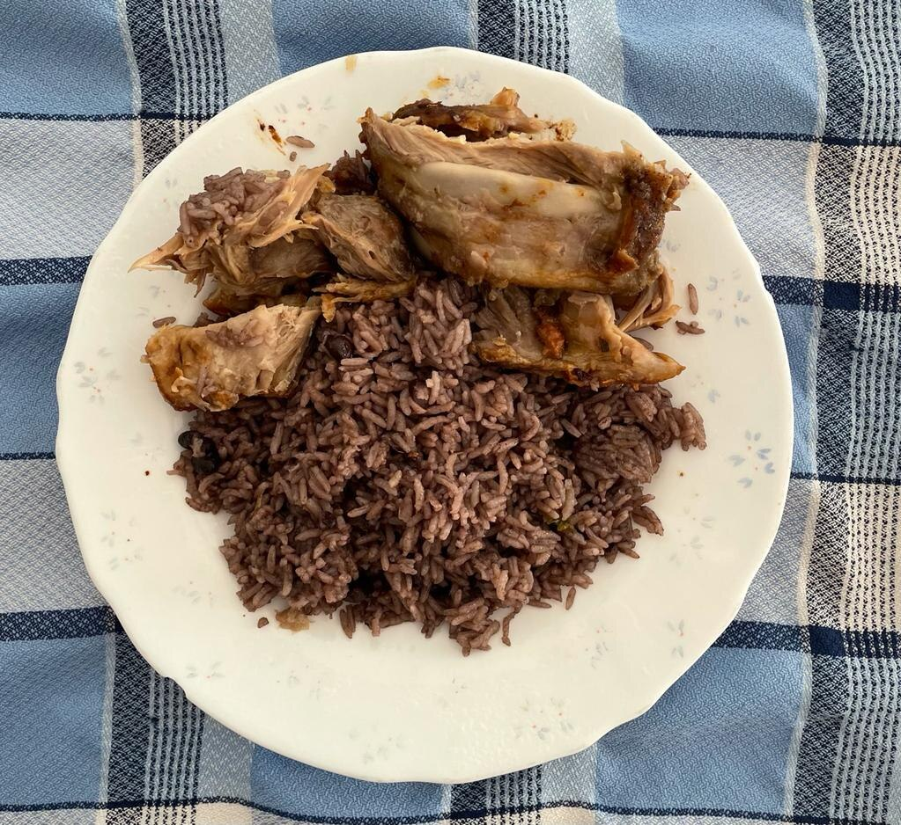

Moros y Christianos

Description
No matter what you called it growing up, this dish is instantly recognizable as a ubiquitous part of any Cuban household. Hearty enough to stand on its own as an entree with a side of tostones and startchy enough to counter balance the unctouos Lechon Asado, Moros (or Arroz Congri) is a powerhouse staple that will keep your coming back for seconds.
With two options for cooking, depending on how much time you have on your hands, this recipe is as versatile as the dish it creates.
Ingredients - Traditional (Soaked beans)
- 6oz of dried black beans
- 8c of water (total)
- 3 slices of thick-cut bacon (or a smoked ham hock, turkey wing/leg, etc)
- 1 medium yellow onion, diced
- 1 jalapeño (or green bell pepper if you prefer a more mild experience)
- 3-4 cloves of garlic, minced
- 1/2 tsp cumin
- 1/2 tsp oregano (dried)
- 1 large bay leaf
- Salt and Pepper to taste
Ingredients - Convenient (Canned beans)
- 15oz of canned black beans, with liquid!
- 3 slices of thick-cut bacon (or a smoked ham hock, turkey wing/leg, etc)
- 1 medium yellow onion, diced
- 1 jalapeño (or green bell pepper if you prefer a more mild experience)
- 3-4 cloves of garlic, minced
- 1/2 tsp cumin
- 1/2 tsp oregano (dried)
- 1 large bay leaf
- Salt and Pepper to taste
Steps - Traditional (Soaked beans)
- In a large pot, add 6 ounces of dry black beans with 3 cups of water (save the remaining 5 cups for tomorrow). Cover and soak overnight.
- The next day, drain the beans and then add 5 new cups of water to the pot. Bring to a boil and cook them for 60 minutes, stirring frequently.
- Be careful not to let the beans dry out completely. You can add 1 cup of water if they are absorbing the water too quickly. Keep an eye on them. You can remove a few beans from the pot and squish them with the back of a spoon to make sure they have softened.
- After softening the beans for 60 minutes, transfer them to a bowl with 1 1/2 cups of its cooking liquid. Set aside.
- In a Dutch oven, add bacon slices and fry until fully cooked and crispy. Do not discard the bacon fat. Transfer the bacon slices to a paper towel-lined plate to drain. Roughly chop them. Set aside.
- In the same Dutch oven with the bacon fat, add green peppers and onions. Sauté for about 2-3 minutes. Add garlic and cook for 30 seconds.
- Add rice, softened black beans with 1 1/2 cups of the cooking liquid from softening the beans, ground cumin, dried oregano, bay leaf, salt, and pepper. Cover, reduce heat to simmer, and cook for 30 minutes. DO NOT OPEN THE LID. The steam is what cooks the rice.
- After 30 minutes, remove the lid and give it a big stir so it doesn't stick to the bottom of the pot. Cook for another 5-10 minutes until the rice is fluffy and cooked.
- Remove from heat but keep the lid on for another 5-10 minutes. Fluff with a fork then stir in the chopped bacon. Serve and enjoy with a side of Tostones.
Steps - Convenient (Canned beans)
- In a Dutch oven, add bacon slices and fry until fully cooked and crispy. Do not discard the bacon fat. Transfer the bacon slices to a paper towel-lined plate to drain. Roughly chop them. Set aside.
- In the same Dutch oven with the bacon fat, add green peppers and onions. Sauté for about 3 minutes. Add garlic and cook for 30 seconds.
- Add rice, black beans with the liquid from the can, 1 cup water, cumin, oregano, bay leaf, salt, and pepper. Cover, reduce heat to simmer, and cook for 30 minutes. DO NOT OPEN THE LID. The steam is what cooks the rice.
- After 30 minutes, remove the lid and give it a big stir so it doesn't stick to the bottom of the pot. Cook for another 5-10 minutes until the rice is fluffy and cooked.
- Remove from heat but keep the lid on for another 5-10 minutes. Fluff with a fork then stir in the chopped bacon. Serve and enjoy with a side of Tostones.
Notes
Want more rice?
Why not try Arroz con Pollo?